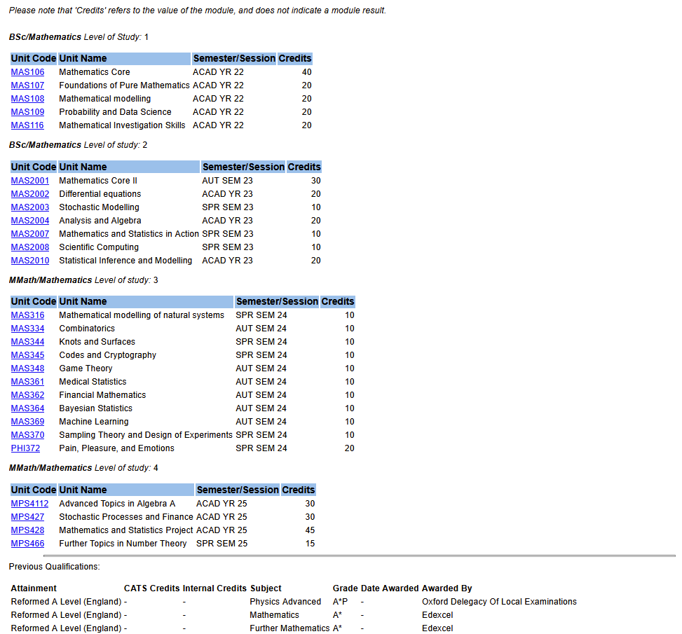
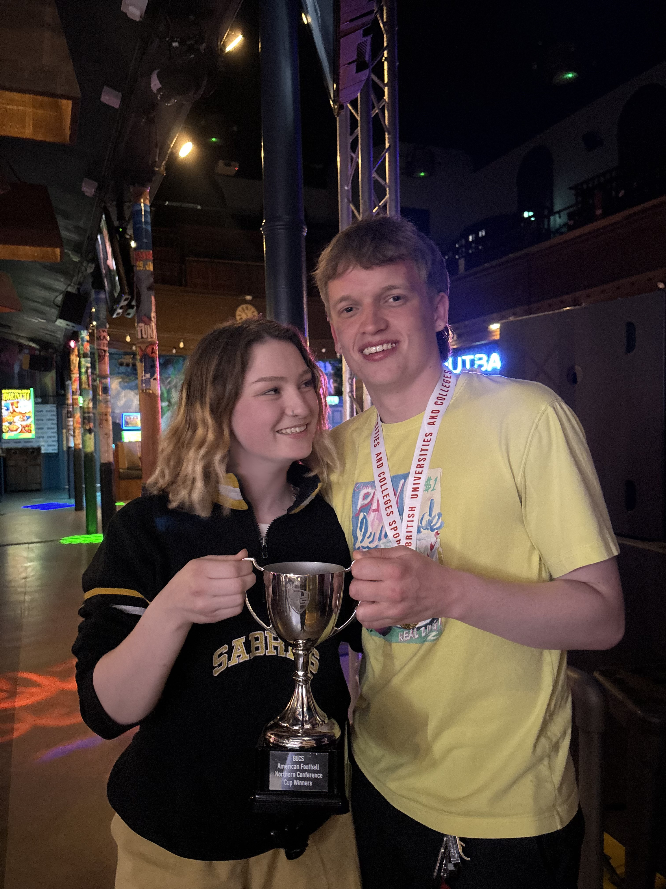

About
Hey! I’m Mikey.
I’m a recent graduate from the University of Sheffield, where I studied for my Master’s in Mathematics (MMath to be specific). I spend my free time making all sorts of data projects, and my ambition is always to do something meaningful with my maths skills. Whether that be data analysis, intelligence, cybersecurity, statistics or anything maths related, if it matters, I want to be a part of it!
I made this site to track my projects, but also my life. What I’m learning, what I’m doing and as a collection of the things I’m proud of.
University
As mentioned, I studied maths at Sheffield. This entailed all sorts of modules, covering topics from statistics to number theory, machine learning to algebra, and even a philosophy module.
Click to view all my University modules

If you would like to view full copy of my HEAR (Higher Education Achievement Report), please contact me directly.
Personal Life
I have a variety of hobbies I enjoy spending my free time doing. The most notable of these would be playing darts. I’m a UDUK National Champion with Sheffield, and have played on stage in front of a thousand people! I’ve also played and coached American Football, and was the club’s President at University. Outside of sport, I enjoy playing Counter Strike (among other games) and spending time in the Peak District, where I grew up (especially if I’m with my lovely fiancé, Freya).



Contact
Feel free to reach out!